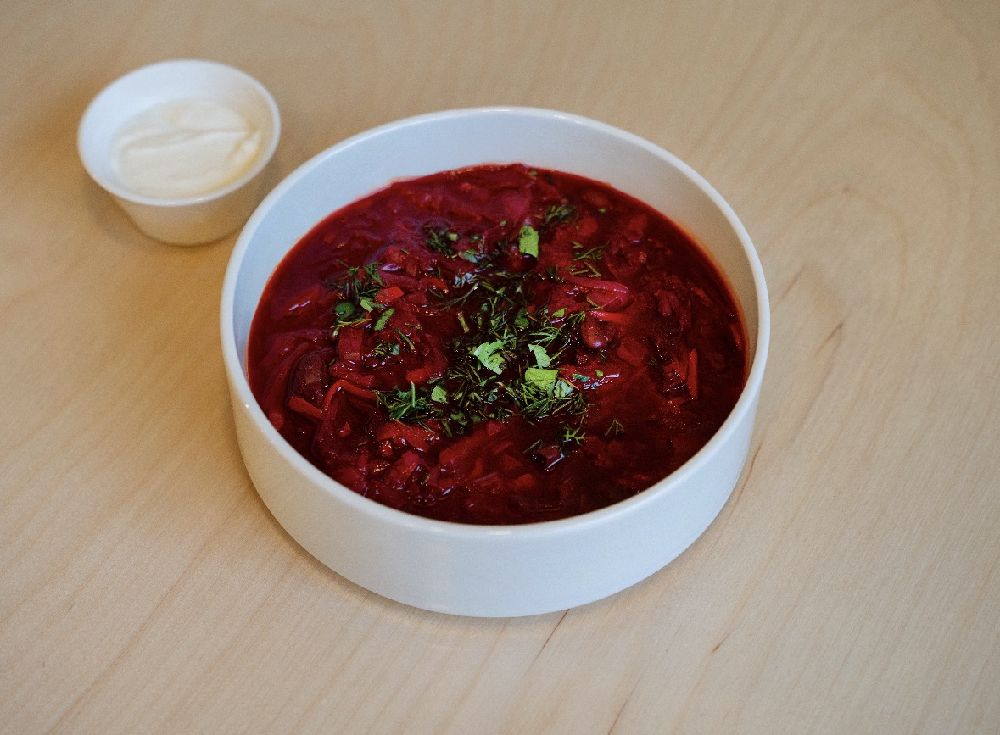
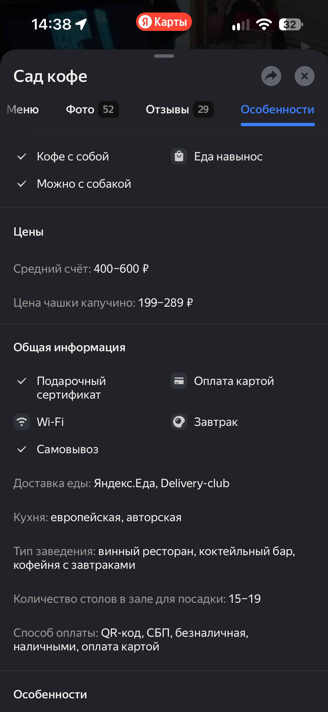

Борщ с говяжьими щечками
490 ₽
Насыщенный борщ с томлёной говядиной. Фото — из материалов пользователя.
Кофейня с завтраками, спешелти кофе, основным меню, винной картой и коктейлями — в спокойном городском пространстве с растениями и тёплой атмосферой.
Информация собрана по карточке заведения и предоставленным материалам. Перед публикацией для бизнеса её стоит финально сверить с владельцем.
Можно взять напиток навынос.
Заведение подходит для гостей с питомцами.
Можно поработать или спокойно посидеть.
Заказ можно забрать с собой.
Вариант для подарка друзьям и близким.
Карта, наличные, QR‑код и СБП.
Можно забрать заказ самостоятельно.
Доступна через Яндекс Еду и Delivery Club.
Есть возможность посидеть на свежем воздухе.
По описаниям заведения — европейская и авторская кухня, завтраки, кофе, коктейли и винная карта. Средний чек указан в диапазоне 400–600 ₽.
Интерьер строится вокруг спокойных кремово‑серых оттенков, зеркал, живых растений и мягких деталей. Получается место и для завтрака, и для встречи, и для вечернего бокала.

Новосибирск · площадь Ленина
Средний чек: 400–600 ₽
Телефон: +7 913 376-46-81
Можно с собакой, есть Wi‑Fi, еда навынос, самовывоз и веранда. Для заказов и доставки доступны Яндекс Еда и Delivery Club. Оплата — картой, наличными, QR‑кодом или через СБП.